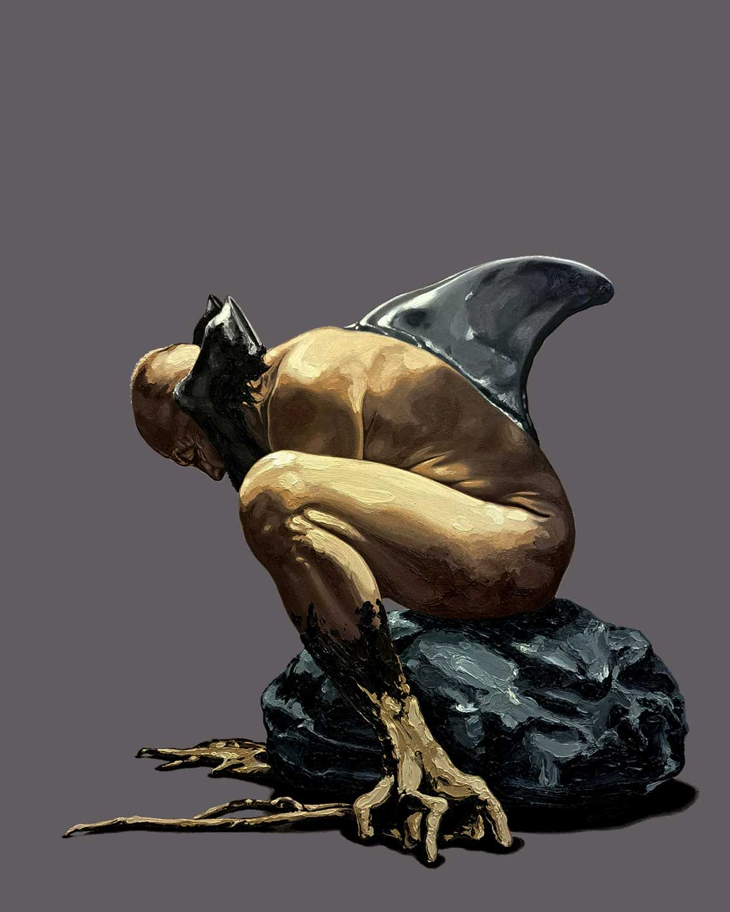

Gegenwärtige Ausstellung
Urban GRÜNFELDER - "Meine Bilder sind das nicht"

Die Ausstellung im Kunstraum Dr. David (Maurer Lange Gasse 47, 1230 Wien) ist bis Mitte Mai 2026 zu besuchen.
Öffnungszeiten: Donnerstags von 16 bis 18 Uhr oder nach Vereinbarung (Tel. 01/87 97 405).
Ausstellungshistorie
Hier finden Sie einen Rückblick auf vergangene Ausstellungen. Klicken Sie auf ein Jahrzehnt, um es aufzuklappen:
-
- 2019
- 2018:
- 2017:
- 2016:
- 2015:
- 2014:
- 2013:
- 2012:
- 2011:
- 2010:
-
- 2009:
- 2008:
- 2007:
- 2006:
- 2004:
- 2003:
- 2002:
- 2001:
- 2000:
-
- 1999:
- 1998:
- 1997:
- 1996:
- 1995:
- 1994:
- 1993:
- 1992:
- 1991:
- 1990:
- 1989:
- 1988: